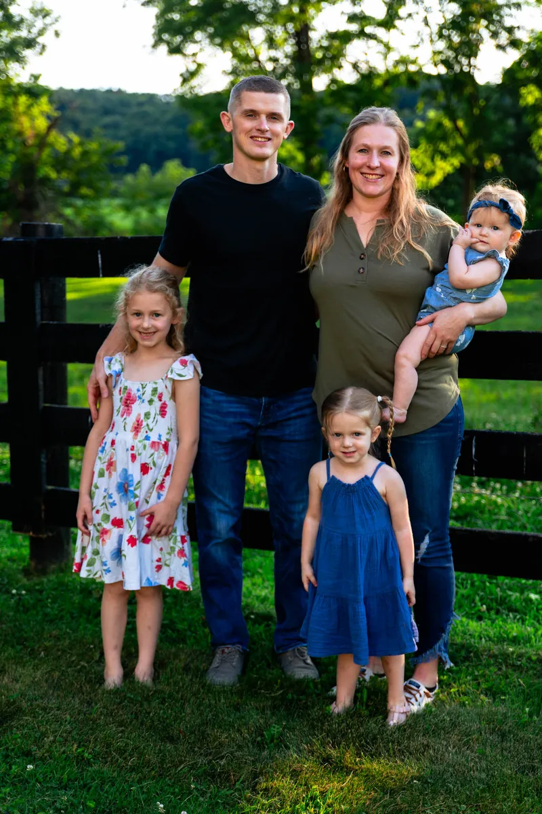
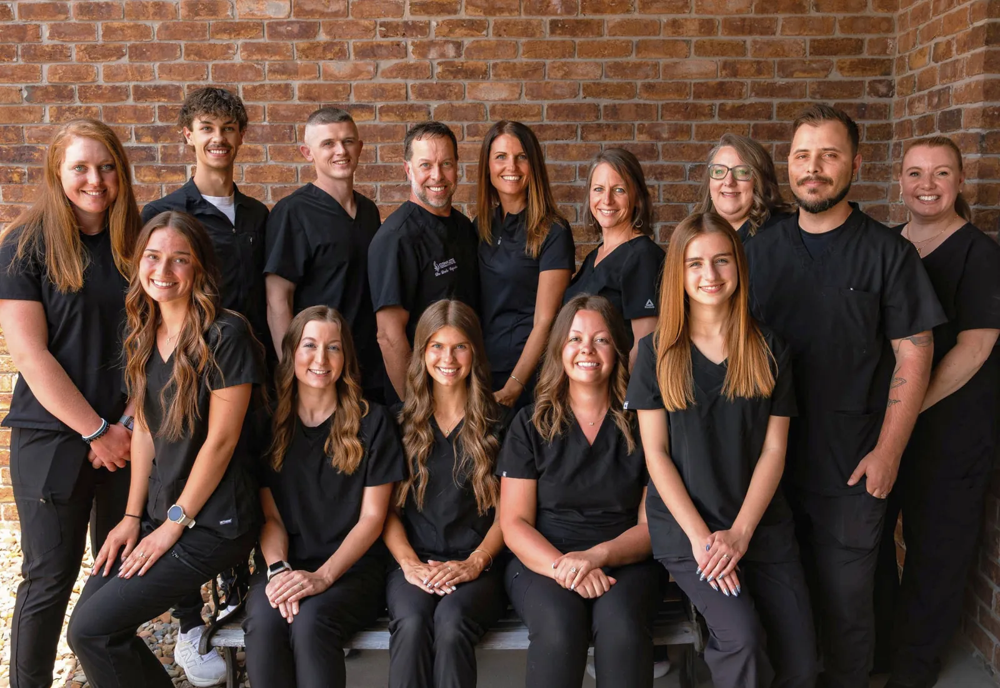

Who you will see
The people you will meet when you come in.

Dale Capela, D.C.
Dr. Dale Capela is a follower of Christ, husband, and father. He owns Complete Chiropractic and Living Well with his wife, Lydia. Together, they have 6 home-schooled children and live on a farm in the beautiful countryside of Wayne County. Dr. Capela graduated from Life University in ‘97 and has served thousands of families in Wayne County and the surrounding areas for nearly 30 years! His mission is to partner with his patients in the pursuit of optimal wellness.
He believes God has designed our bodies to heal and function well, and he aids in helping patients realize that reality. Dr. Dale has attended several chiropractic mission trips in India, Mexico, and the Dominican Republic. He is also a key contributor to the New York Times Bestseller “Body By God” written by Dr. Ben Lerner.
As a chiropractor, he also specializes in neurology, and therapies, is trained in pediatric adjustments, and has brought in an additional doctor and assistants to aid in functional wellness and weight-loss resistance for patients’ whole body care. Dr. Dale continually educates himself and cares for his patients with the most up-to-date therapies and techniques. He is grateful for the opportunity to continue to lead his community in pursuing true health and wellness and is ready to serve you and your family.
Dr. Dale is a member of the International Chiropractic Association (ICA), Ohio State Chiropractic Association (OSCA), and the Mid-Ohio Chiropractic Association (MOCA) to keep up to date with the latest methods of care and the best way to serve you! He has a huge desire to serve everyone he can and has been part of Chiropractic Mission trips to Mexico, The Dominican Republic, and India with Matthew 10 Ministries.
When he’s not in the office, Dr. Dale enjoys farming and hunting. He also sings in a Men’s Christian ensemble and plays the guitar. He and his family enjoy attending church weekly at the Wooster Church of the Nazarene.
Lydia Capela
Lydia is the wife of Dr. Dale and a homeschooling mother to their six children. She raises puppies and goats on their farm in Wayne County. Lydia launched Living Well for weight loss and functional medicine in 2013. Her passion to see people live healthily is what motivates her mission. Lydia understands and teaches that God has created us beautifully and wonderfully and we have been given the responsibility to be good stewards of our bodies. However, she also understands the time and life pressures that are a part of our busy culture. Her mission is to help grow and educate those on the importance and the need for weight loss and functional medicine. She knows that education and accountability are the key elements in helping people sustain their healthy lifestyles. Together, Dr. Dale and Lydia continue on in their vision of transforming the lives of people in their community through healthy living. They are ready to help you next!
"Long life to you! Good health to you and your household! And good health to all that is yours!" - 1 Samuel 25:6
Dr. Aric Freischlag
Dr. Aric leads the Functional Medicine department at Complete Chiropractic and Living Well. After earning his Doctorate through a traditional medical education, his own personal health journey opened the door to the world of functional medicine and root-cause healthcare. That experience transformed not only his own health, but also his passion for helping others.
Today, Dr. Aric is dedicated to helping patients uncover the underlying causes of chronic health challenges rather than simply managing symptoms. By combining advanced laboratory testing, evidence-based functional medicine, and personalized care plans, he helps individuals of all ages restore health, optimize performance, and unlock their God-given healing potential.
Outside of work, Dr. Aric enjoys spending time with his wife and three young daughters. Whether he's hiking, running, practicing archery, reading, or simply enjoying the outdoors with his family, he values living the healthy lifestyle he encourages his patients to pursue.

Sicily Gliozzo
Sicily runs our front desk, making sure we are prepared to serve each patient in the best way. In her spare time, she enjoys cooking, reading, camping, traveling, concerts, yoga, and spending time with her horse on the farm. One of her dreams is to have her own homestead to raise clean food and resources for her future family!
Alexis Shepler
Alexis greets our patients with a smile at our front desk. She is looking forward to opening a new chapter in her life by getting married in the fall! Alexis enjoys CrossFit, golf, spending time with her friends and family, and helping with worship for Youth Sundays at her church.
Ty Capela
After growing up under chiropractic care, Ty will follow the same route and attend chiropractic school in the spring. He looks forward to getting married in the fall! Outside of work, he enjoys hunting, fishing, archery, music, and leading worship at his church.
Kara Vellaccio
Kara is the head of our billing department and enjoys working in a family atmosphere with the focus of helping people stay well. She has lived in many places growing up due to her father’s ministry placements, but now resides in Wooster with her husband. When she’s not working, she enjoys reading and writing, as well as spending time with her 7 nieces and 2 nephews.
Jaimie Stauffer
Jaimie handles marketing, social media, and outreach events. She grew up in Wayne County, spent a few years living in Orlando, FL, and now resides in Hartville with her husband. She enjoys painting, gardening, sand volleyball, and traveling. She will take any opportunity to be outside in the sunshine!
Mya Donatini
Mya is our Radiologist Technologist, assisting all of our chiropractic patients! Outside of work, she stays active by playing tennis, pickleball, and swimming. She loves to spend quality time with her friends and family, and enjoys going to coffee and Bible studies.
Emily Garside
Emily is the head of our therapies department, ensuring patients have everything they need on their wellness journey. She graduated from the University of Akron with a B.S. in Biochemistry, and she also runs her own horse training and coaching business! She enjoys playing volleyball, tennis, and soccer.
Athaleyah Capela
Athaleyah brings a great smile and joy to the Therapies Team. She loves to help each individual achieve optimal wellness through strength and recovery. Athaleyah loves animals, horseback riding, coffee, and spending time with her friends and family!
Amelia Widdows
Amelia loves serving patients through their wellness journeys. Outside of work, she enjoys leading music at her church, reading, hunting, playing the flute and piccolo in her community band, and she recently got married over the summer!
Angel Beard
Angel brings a kind and gentle smile while she offers assistance to each patient. She enjoys spending time with her husband and children, and being a “GiGi” to her grandson. When she gets the chance, she loves to travel!
Ashley Havener
Ashley joined the team in 2020, and currently works remotely from her home in Montana. She helps functional wellness patients along their journeys, offering support, encouragement, and guidance. Outside of work, she loves to hike, hunt, swim, and kayak. She loves to spend time with her husband and son, and has a passion to study the Word of God.
Keirstin Carroll
Keirstin joined the team in January 2014. She now works remotely, helping weight loss patients begin their program confidently and offering support throughout the process. She has a great passion for health and wellness and loves helping people achieve their God given potential.
Why choose us?
Three reasons patients give us when we ask.
Looking for root causes
We work to find what is driving how you feel, not just manage symptoms.
Testing, not guessing
Lab testing helps shape a plan that fits you.
Support along the way
Our team coaches and checks in with you through your program.

What makes us different
How a careful, specific approach gets somewhere when a general one has stalled.
What people say about Living Well
A few of the things patients have said about the care they have had here.
After dealing with years of dizziness, exhaustion, gut issues, palpitations, and other concerns- when every day felt like a fight to be able to function- I’ve seen a huge improvement in these symptoms under the care of Dr. Dale and Dr. Aric (and the whole team!). I was also able to stop taking a prescription medication, have more energy, and improved mental focus.
J JoannaEveryone here is fantastic! Treat you like family and listen to your needs. Excited to start finding solutions to my functional health issues!
B BennyComplete Chiropractic and Living Well is a genuine partner in your health care journey. It starts with walking in to a smiling face and friendly greeting from the front desk staff. You are then counseled by a doctor who really wants to help you get your body back to its God given design. So refreshing.
J JamesThe doctors and staff are incredibly knowledgeable, thorough, and genuinely care about finding the root cause rather than just treating symptoms.
K KyleHighly recommend Complete Chiropractic and Living Well services! They are dedicated to their craft. Always positive attitudes throughout the whole facility. They cover almost every aspect of health and can put together a plan for your expectation and your budget. It’s a complete package center! Thank you all for all that you have done for me!
R RyanDoctors are very knowledgeable and work with you to get you where you need to be. Staff is always pleasant and helpful.
M MicheleDr. Aric is kind and patient and explains why he’s recommending certain treatments. Top notch staff!
B BethAnneThis place has been such a blessing to me! I love their approach. It is professional and personal. They take the time to learn about your medical history, your goals and then go to work through a blood analysis to figure out the best plan for you. I have been pretty health conscious my whole life, but menopause threw me a big curve ball that I could not work through with traditional medicine. I am 3 months in and can't wait for my second blood draw. I am down 10 pounds, sleeping better, resting heart rate is down, learning a lot about nutrition and what my body needs.
J JamieI dropped 53 pounds in 6 months. Beyond the weight loss I gained the skills to keep it off. The team is great. They were there for me to answer all my questions and encouraged me to succeed.
J JenniferDr. Aric helped me pinpoint muscles that were resulting in back pain, took me through therapy and gave me exercises to strengthen those weak areas and the improvement has amazing. I really appreciate his knowledge and help.
T TiffanyI lost a total of 30 pounds on the program, I don’t crave sweets or carbs anymore, and my energy levels are great! I have a clear mind for the first time in years!
D DarrellMy experience with Living Well was excellent! I feel like I found my true self. I feel amazing! I would highly recommend!
S SharonCome and meet us.
New patients are welcome. Come as you are, we will take it from there.
Tell us a good time and we'll call to confirm.